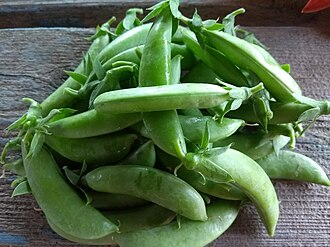

スナップエンドウの生産量 都道府県ランキング
全37都道府県の順位と収穫量
スナップエンドウの収穫量が全国で最も多いのは鹿児島県で、3,400 tです。全国（5,980 t）の57%を占めます。

| 順位 | 都道府県 | 収穫量 | 全国に占める割合 |
|---|---|---|---|
| 1位 | 鹿児島県 | 3,400 t | 57% |
| 2位 | 熊本県 | 889 t | 15% |
| 3位 | 愛知県 | 445 t | 7.4% |
| 4位 | 福島県 | 239 t | 4.0% |
| 5位 | 長崎県 | 212 t | 3.5% |
| 6位 | 大分県 | 115 t | 1.9% |
| 7位 | 茨城県 | 101 t | 1.7% |
| 8位 | 北海道 | 67 t | 1.1% |
| 9位 | 宮崎県 | 62 t | 1.0% |
| 10位 | 青森県 | 56 t | 0.9% |
| 11位 | 大阪府 | 42 t | 0.7% |
| 12位 | 秋田県 | 37 t | 0.6% |
| 13位 | 岐阜県 | 35 t | 0.6% |
| 14位 | 広島県 | 31 t | 0.5% |
| 15位 | 和歌山県 | 28 t | 0.5% |
| 16位 | 千葉県 | 26 t | 0.4% |
| 17位 | 京都府 | 26 t | 0.4% |
| 18位 | 愛媛県 | 26 t | 0.4% |
| 19位 | 岩手県 | 21 t | 0.4% |
| 20位 | 神奈川県 | 19 t | 0.3% |
| 21位 | 山形県 | 13 t | 0.2% |
| 22位 | 静岡県 | 11 t | 0.2% |
| 23位 | 徳島県 | 11 t | 0.2% |
| 24位 | 宮城県 | 10 t | 0.2% |
| 25位 | 岡山県 | 10 t | 0.2% |
| 26位 | 島根県 | 8 t | 0.1% |
| 27位 | 兵庫県 | 7 t | 0.1% |
| 28位 | 福岡県 | 6 t | 0.1% |
| 29位 | 佐賀県 | 6 t | 0.1% |
| 30位 | 長野県 | 5 t | 0.1% |
| 31位 | 群馬県 | 3 t | 0.1% |
| 32位 | 高知県 | 3 t | 0.1% |
| 33位 | 新潟県 | 2 t | 0.0% |
| 34位 | 石川県 | 2 t | 0.0% |
| 35位 | 山梨県 | 1 t | 0.0% |
| 36位 | 三重県 | 1 t | 0.0% |
| 37位 | 香川県 | 1 t | 0.0% |
スナップエンドウの生産量の推移（令和2年産〜令和6年産）
全国の収穫量は、令和2年産の7,690 tから令和6年産の5,980 tへ、22%減りました。期間中、1位は一貫して鹿児島県です。
| 年 | 全国 | 1位 | 2位 | 3位 |
|---|---|---|---|---|
| 令和6年産 | 5,980 t | 鹿児島県3,400 t | 熊本県889 t | 愛知県445 t |
| 令和4年産 | 5,890 t | 鹿児島県3,080 t | 熊本県886 t | 愛知県524 t |
| 令和2年産 | 7,690 t | 鹿児島県4,770 t | 熊本県824 t | 愛知県510 t |
この数字について
- 分類：マメ科
- 全国の収穫量：5,980 t
- この数字が表すもの：収穫量（収穫された重量）
- 調査：地域特産野菜生産状況調査 令和6年産
- 37県分を調査（調査していない県は順位に入りません）
スナップエンドウの生産量について、よくある質問
- スナップエンドウの生産量が日本一の都道府県はどこですか？
- 鹿児島県です。地域特産野菜生産状況調査（令和6年産）で3,400 tでした。
- スナップエンドウの生産量ランキング2位・3位はどこですか？
- 2位は熊本県（889 t）、3位は愛知県（445 t）です。
- スナップエンドウの生産量ランキング4位・5位はどこですか？
- 4位は福島県（239 t）、5位は長崎県（212 t）です。スナップエンドウの全37県の順位は上の表のとおりです。
- スナップエンドウの全国の生産量はどれくらいですか？
- 5,980 t（令和6年産）です。